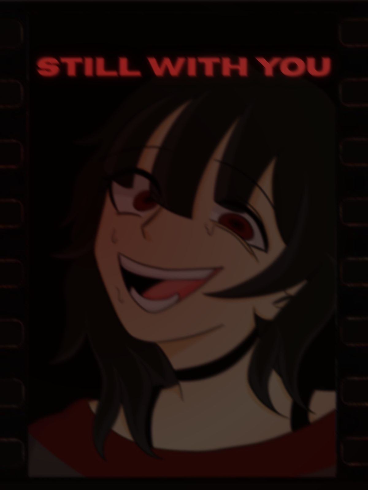

01 Juego completoVideojuego · Terror psicológico
Still With You
Novela visual narrativa donde las decisiones alteran la percepción, los diálogos y el desenlace de una relación fragmentada.
- Mi rol
- Diseño narrativo, programación e integración
- Herramientas
- Ren'Py · Python · Dirección visual
- Entrega
- Windows · Español · 2 finales